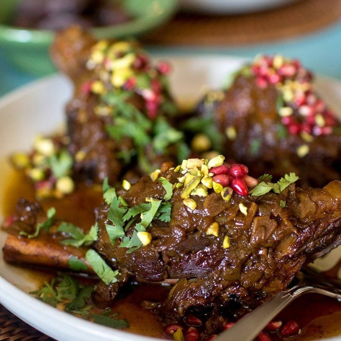

Keleya Zaara

Description
Tunisian lamb with saffron is hearty, fragrant, and easy to prepare.
Ingredients
- 4 tbs Olive oil
- 750g Lamb
- 1 1/2 tsp Saffron
- 1 Large chopped onion
- 25ml Water
- 30g Parsley
- 1 tbs Butter
- 1 Lemon
Steps
- Heat the vegetable oil in a large frying pan over medium-high heat.
- Add the lamb and cook until browned on all sides, about 5 minutes.
- Season with saffron, salt and pepper to taste; stir in all but 4 tablespoons of the onion, and pour in the water.
- Bring to boil, then cover, reduce heat to medium-low, and simmer until the lame is tender, about 15 minutes.
- Uncover the pan, stir in the butter, and allow the sauce to reduce for 5 to 10 minutes until it reaches the desired consistency.
- Season to taste with alt and pepper, then pour into a serving dish.
- Garnish with lemon wedges to serve.
Home